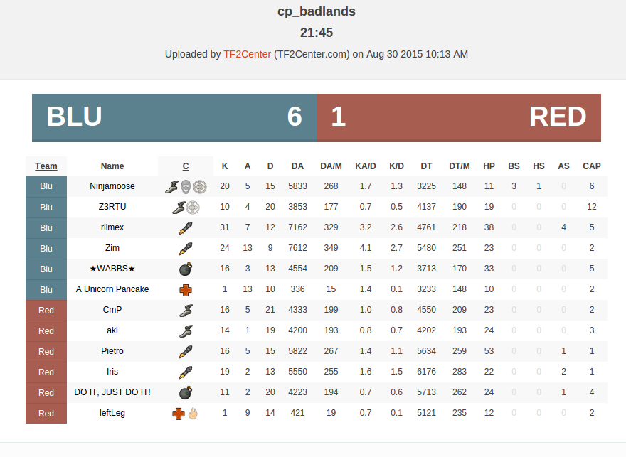

Team Fortress 2 is a based team first person shooter from valve software. It has two teams that battle on a map for achieve some objective. TF2 has nine different classes that the player can choose. It is a great and fun game.
Like several multiplayer games, TF2 has a strong community in the competitive scene. Some of them create the logs.tf, a plugin to record data from TF2 matches and analyze them. The Logs.tf website collect several data from the logs like who kill more enemies, how much damage a player has taked or done, and others information. But they ignore all spatio-temporal data like when and where a player has died. So here is when I join them.

Fig 1. - An example of the data extracted from the log
The TF2 Log Analyzer project aim to extract spatio-temporal knowledge from the log data. Analyzing where, when and possible why some event had happened. This could be used as a feedback for the team or as data for the game IA, that can avoid places with several deaths or looking for alternative routes.
You can check the project progress at the blog section.